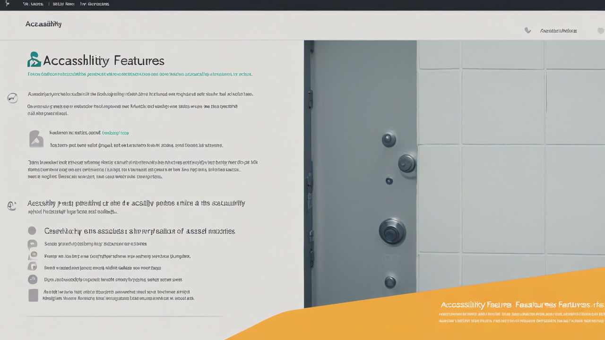

Advantages of Chatbot Online Ticket Booking System
For the National Council of Science Museums
1. Personalized Visitor Experience:
The chatbot can offer personalized recommendations based on visitor preferences, suggesting specific exhibits or events.
2. Interactive Educational Content:
The chatbot can provide educational information about exhibits, enhancing the learning experience.
3. Real-Time Updates:
The chatbot can deliver real-time updates on exhibit availability and special events.
4. Ticket Customization:
Visitors can easily customize their ticket options directly through the chatbot interface.
5. Feedback Collection:
The chatbot can solicit visitor feedback post-visit, helping the museum gather insights for improvement.

6. Integration with Visitor Management Systems:
The chatbot can integrate with existing systems, providing a unified platform for handling bookings and data.
7. Promotion of Membership Programs:
The chatbot can inform visitors about membership options and exclusive events.
8. Event and Workshop Registrations:
Facilitating registrations for workshops and special events enhances visitor engagement.

9. Accessibility Features:
The chatbot can assist individuals with disabilities, providing information about accessibility options.
10. Crisis Management:
In emergencies, the chatbot can quickly inform visitors, helping to manage expectations.
11. Social Media Integration:
The chatbot can allow visitors to share their experiences via social media platforms.
12. Enhanced Security:
Secure payment processing and data handling build trust in the booking process.